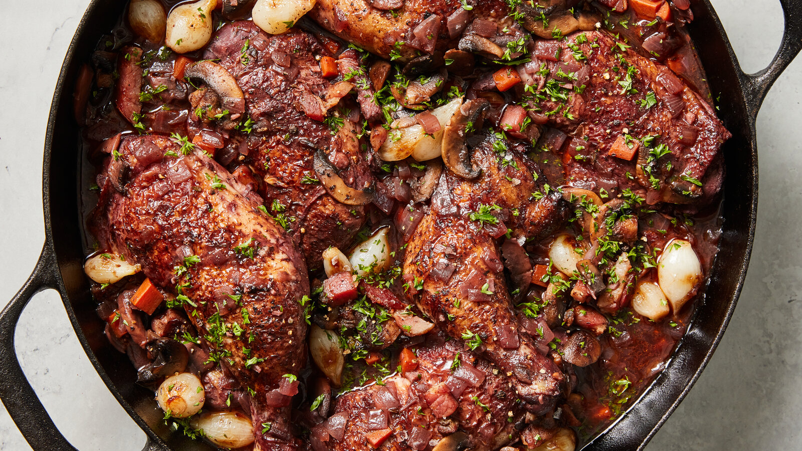

América
- México: Tacos, guacamole, mole.
- Perú: Ceviche, lomo saltado.
- Colombia: Arepa, lechona.

|
Europa
- Italia: Pasta, pizza, rissoto.
- Francia: Croissant, quiche, coq au vin.
- España: Paella, tapas, jamón ibérico.

|
África
- Marruecos: Cuscús, tajín.
- Etiopía: Injera con guisos.
- Sudáfrica: Bobotie, braai (parrillada)
|
Asia
- China: dim sum, pato pekinés.
- Japón: sushi, ramen.
- India: curry, samosas, naan.
|
Oceanía
- Bush Tucker: Más que platillo, se refiere a la dieta basada en la flora y fauna nativas de
la región, como la carne de canguro.
- Lamington: Bizcocho cubierto de chocolate y coco.
- Pavlova: Un postre de merengue con crema y frutas.
|
|
|
Ingredientes universales
|
Bebidas más populares
- Espresso (Italia)
- Mate (Argentina)
- Té verde (China / Japón)
- Tequila y mezcal (México)
|
Postres famosos
- Tiramisú (Italia)
- Churros con chocolate (España)
- Mochi (Japón)
- Brigadeiro (Brasil)
|
Datos curiosos
- El sushi originalmente era una forma de conservar el pescado en arroz fermentado.
- El cacao era tan valioso en las culturas prehispánicas de América, que se usaba como moneda.
- La cerveza es una de las bebidas más antiguas del mundo, existen registros sumerios que
indican que se ya se producía hace más de 7.000 años.
|